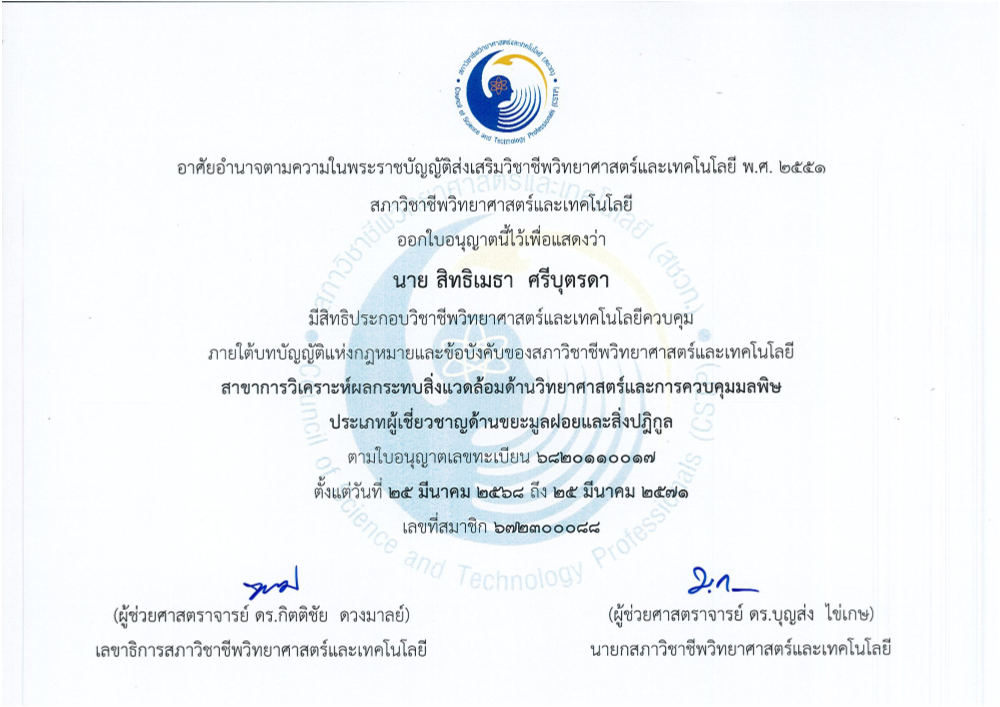
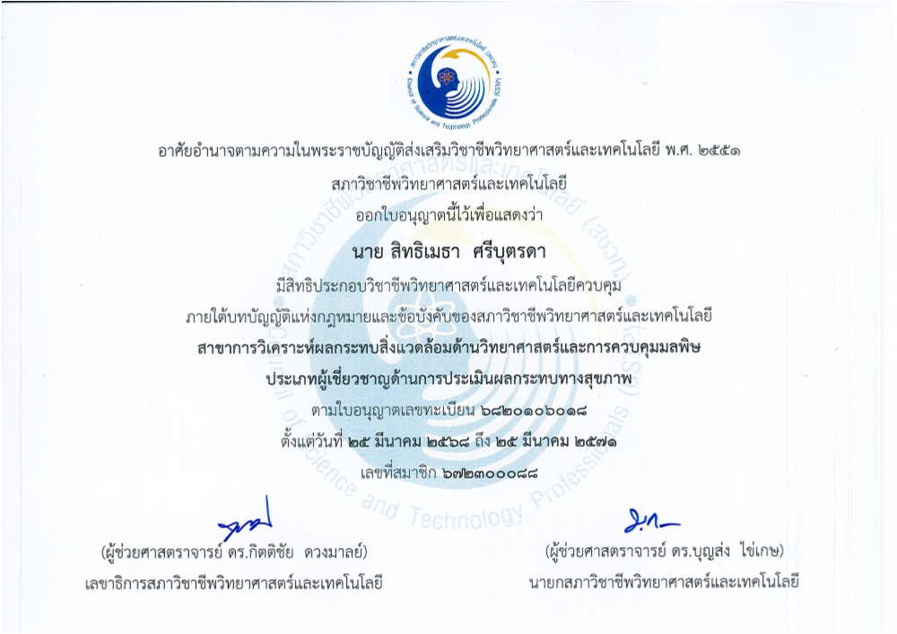
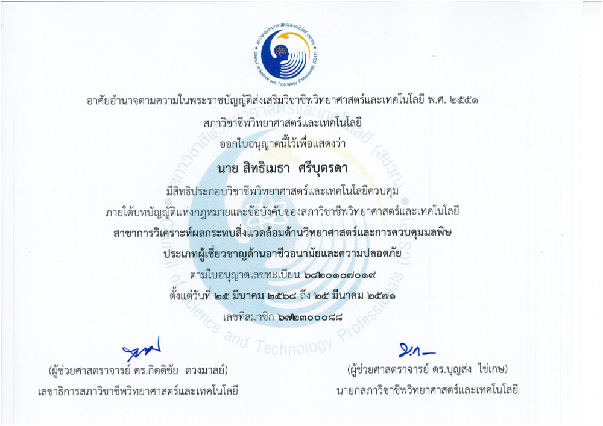
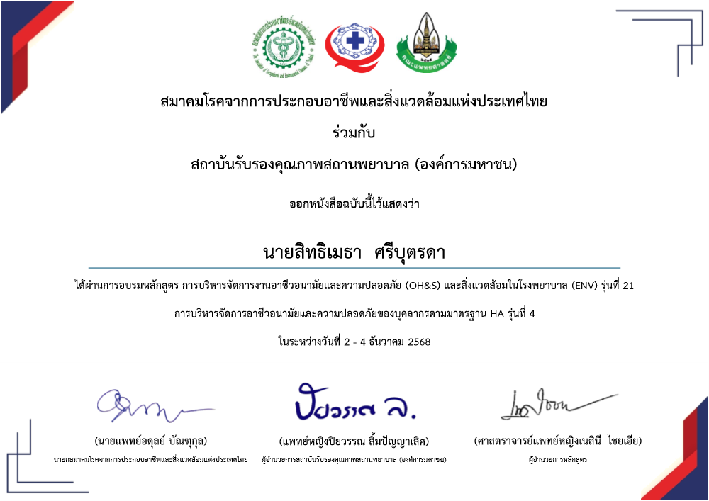
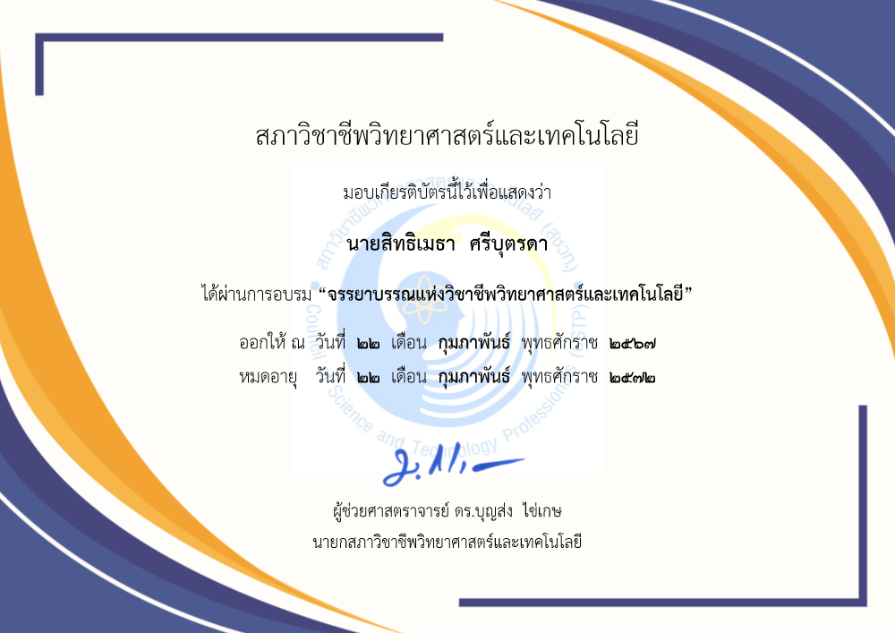
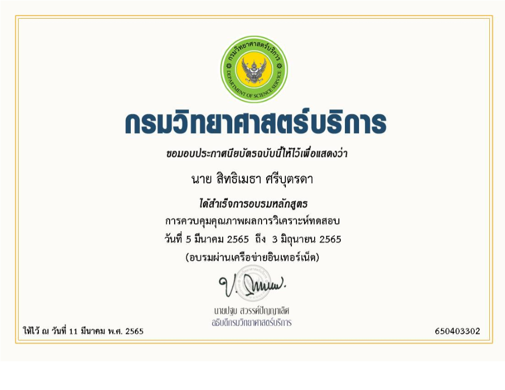

Category 3 • Professional Certificates & Training
หมวดที่ 3 : ใบรับรองวิชาชีพและการฝึกอบรม (12 ใบรับรอง)
วุฒิบัตรผู้เชี่ยวชาญสภาวิชาชีพ ประกาศนียบัตรรับรองมาตรฐานวิชาชีพ และหลักสูตรพัฒนาทักษะเฉพาะทางที่ผ่านการทดสอบและนำมาปฏิบัติงานได้จริง
พ.ศ. 2568

ผู้เชี่ยวชาญด้านการจัดการมูลฝอยและสิ่งปฏิกูล
สภาวิชาชีพวิทยาศาสตร์และเทคโนโลยี (เลขที่ 6820110017)
พ.ศ. 2568

ผู้เชี่ยวชาญด้านการประเมินผลกระทบสุขภาพ
สภาวิชาชีพวิทยาศาสตร์และเทคโนโลยี (เลขที่ 6820106018)
พ.ศ. 2568

ผู้เชี่ยวชาญด้านอาชีวอนามัยและความปลอดภัย
สภาวิชาชีพวิทยาศาสตร์และเทคโนโลยี (เลขที่ 6820107019)
พ.ศ. 2568
 Smart Hospital, Green Environment สู่โรงพยาบาลอัจฉริยะที.png)
Smart Hospital, Green Environment สู่โรงพยาบาลอัจฉริยะ
สมาคมนักบริหารโรงพยาบาลประเทศไทย (สนรท.)
พ.ศ. 2568

GREEN & CLEAN Hospital Challenge (ระดับท้าทาย)
การจัดการของเสียทางการแพทย์และพลังงาน • กรมอนามัย
พ.ศ. 2568

การบริหารจัดการงานอาชีวอนามัย (OH&S) & สิ่งแวดล้อม (ENV)
มาตรฐาน HA รุ่นที่ 4 / สมาคมโรคจากการประกอบอาชีพฯ
พ.ศ. 2567

จรรยาบรรณแห่งวิชาชีพวิทยาศาสตร์และเทคโนโลยี
สภาวิชาชีพวิทยาศาสตร์และเทคโนโลยี
พ.ศ. 2565

ข้อกำหนดมาตรฐาน ISO/IEC 17025:2017
กรมวิทยาศาสตร์บริการ (วศ.)
พ.ศ. 2565

การควบคุมคุณภาพผลการวิเคราะห์ทดสอบ
กรมวิทยาศาสตร์บริการ (วศ.)
พ.ศ. 2569

Basic Cybersecurity Series
ทักษะความมั่นคงปลอดภัยทางไซเบอร์ • TDGA
พ.ศ. 2569

จุดประกายความคิดเพื่อสร้างนวัตกรรม
Building an Innovation Mindset • TDGA
พ.ศ. 2569

Digital Literacy ทักษะความเข้าใจดิจิทัล
สถาบันพัฒนาบุคลากรภาครัฐด้านดิจิทัล • TDGA